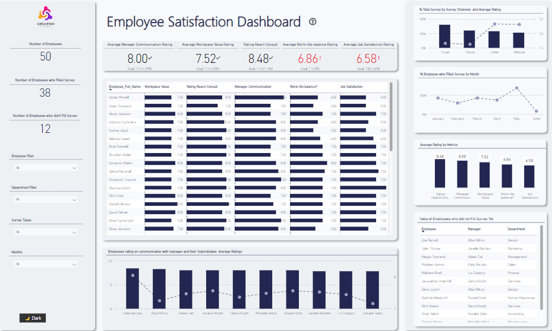
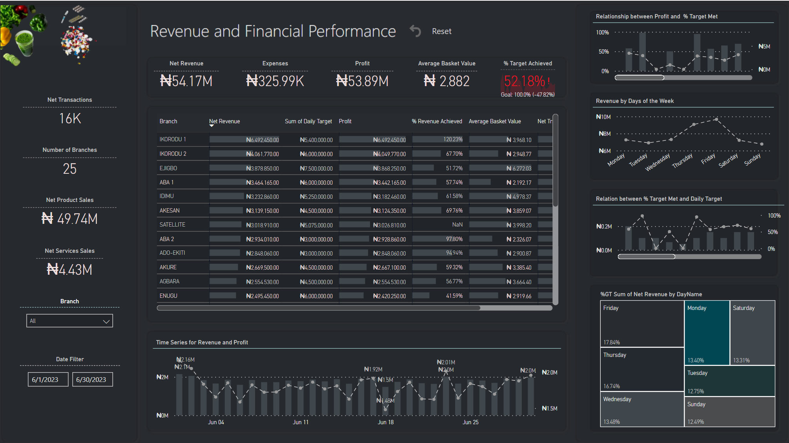

As an ML engineer and AI enthusiast, I turn data into smart solutions. With a Master's in Data Science and AI, I've worked across various industries like tech, retail, and finance. I love tackling data challenges, from Excel to advanced Machine Learning. My passion is helping businesses make data-driven decisions leveraging the capabilities of new generations of AI models like large language models

I designed an intuitive, interactive, and engaging analytics app that provides real-time data visualization for an organization's periodic employee satisfaction survey. This app helps in monitoring and interpreting employee satisfaction metrics.

I designed an intuitive, interactive, and engaging analytics app that provides real-time data visualization for an organization's periodic employee satisfaction survey. This app helps in monitoring and interpreting employee satisfaction metrics.

I utilized data from the Nigeria Interbank Settlement System to extract valuable insights regarding consumer purchasing patterns and motivations. For the analysis, I employed Power BI to examine the data specifically for the month of January 2023.

This retail analytics dashboard is designed to investigate the revenue of a pharmaceutical chain across 25 different branches.

This report presents my findings on customer retention versus churn within the HubPay dataset.

This analysis aims to employ advanced natural language processing (NLP) techniques to thoroughly explore and understand the content of a large collection of tweets written in Dutch

The analysis was conducted using two datasets: daily price and volume data for Bitcoin and transaction data for Tether. These datasets were combined to produce a dataset containing daily Bitcoin prices and daily USDT transaction volumes for further analysis..